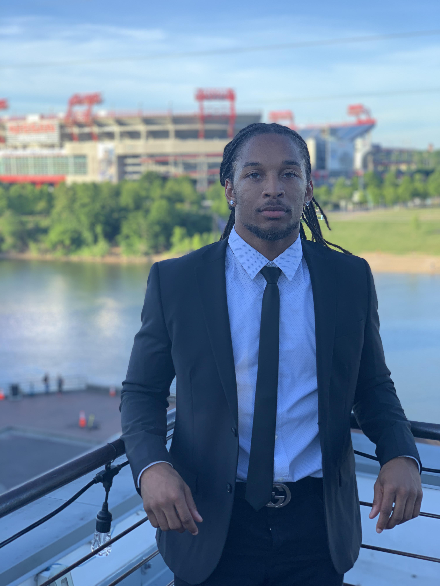

Malcolm is a senior Computer Engineering major at Howard University. Residing from Suitland, Maryland, Malcolm is also a member of the Howard University football team. Malcolm was a Software Engineering intern at Asurion in the summer of 2019. He recently finished up an internship at Boland where he was an Optimization Engineering Intern. He also mentors with "Boys2Kings" where he will do numerous activities including the service of his community and pouring his knowledge back into the youth. Malcolm is looking for any business opportunities that will help him develop his professionalism and knowledge of software engineering as he pursues his Bachelors degree.
▪ Collect and aggregate building data sources (HVAC, energy, water, etc.) and assist Optimization Engineers with analysis and development of operational and efficiency improvements ▪ Use Excel and Microsoft PowerBI to input & visualize data ▪ Input building utility data and analyze for energy efficiency opportunities
• Developing effective, maintainable code in a timely fashion with SQL and DBeaver. • Ensuring code compiles with security policies and guidelines. • Creating visualizations of real time data with Microsoft Power BI, making it easier to read and understand. • Working on a team business case to present to the COO of Asurion.
Boys2Kings is a mentoring program intended to match young men with lifelong mentors to help guide them through their life journey. We believe that we are better together and it is important to use our experiences to help the next man. We strive to be the change we wish to see by using our platform to bring awareness to the issues our young black men face and promote healthy communication, leadership, and life skills.